Skill Cape Perks
Exclusive to World 2 only
| Attack Cape | 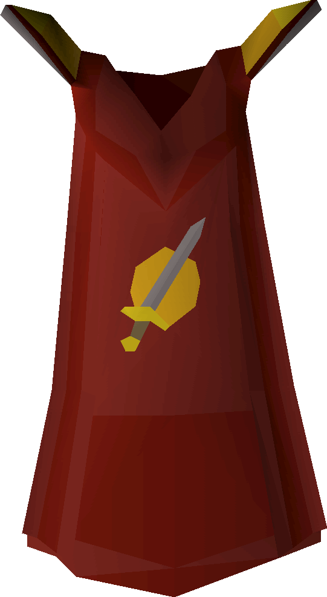 | Your mastery of weapons allows you to almost always land a hit. When your attack level is taken into account to determine hit chance, 6 levels are added to it automatically, making your effective attack level 105. Stacks with potions and other effects. |
| Defence Cape | 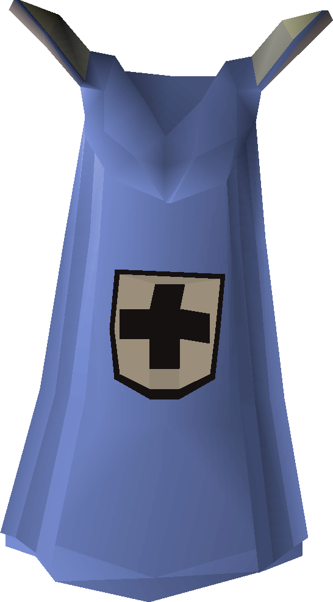 | Your mastery of the defencive arts makes you an expert with shields. Shields have 20% higher defence bonuses while wearing the cape. |
| Strength Cape | 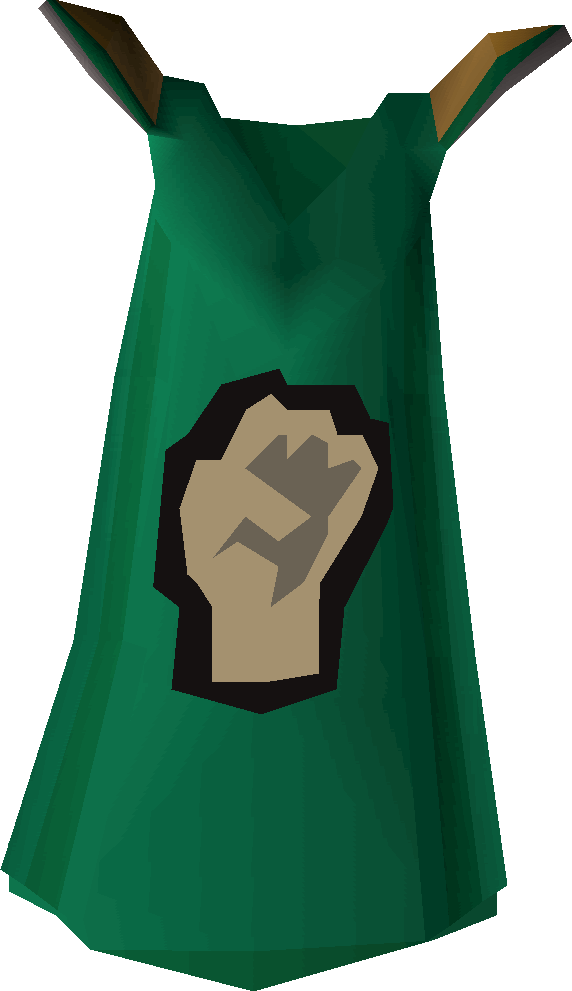 | The weapons made for you are really made for you. Weapons with strength requirements (halberds, granite maul, tzhaar-ket-om, torag's hammers and dharok's axe) have 20% higher strength bonuses while wearing the cape. |
| Hitpoints Cape | 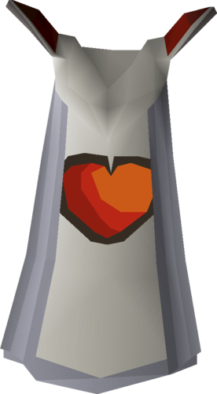 | Your constitution and willpower are so great that your max hitpoints increase to 110 while wearing the hitpoints skillcape. |
| Ranged Cape |  |
You are finely attuned to the arsenal of ranged weaponry. Ranged weaponry (excluding thrown weapons) have higher accuracy. |
| Magic Cape | 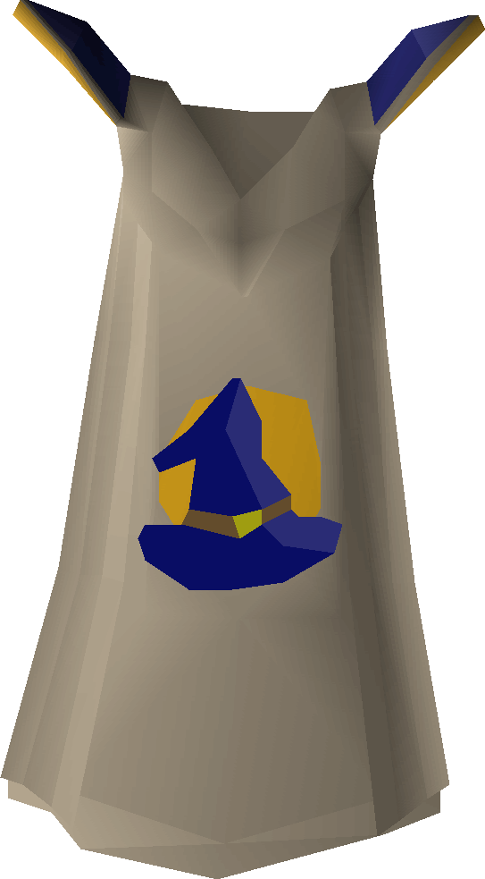 | You have an in-depth knowledge of all the different books of magic. This perk allows you to swap your spellbook twice per day. |
| Prayer Cape | 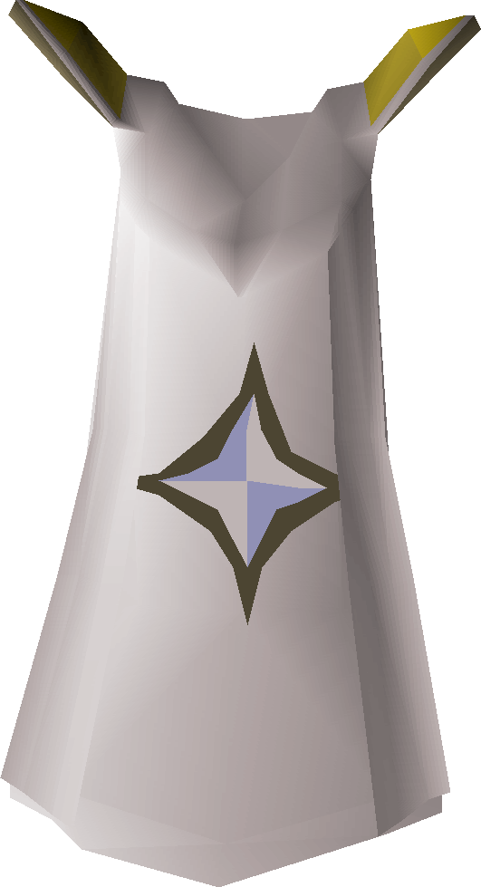 | Due to your close affinity with the divine, each tick where prayer points would be drained while using a prayer you have a 10% chance to not lose prayer points that tick. |
| Slayer Cape |  |
Not Implemented yet. |
| Summoning Cape |  |
Not Implemented yet. |
| Runecrafting Cape | Your knowledge of the Runecrafting abyss and the altars makes you an expert at manipulating spacetime to arrive at an altar of choice. Can operate the cape to teleport to a runecrafting altar of your choice 3 times a day. | |
| Construction Cape |  |
Not Implemented yet. |
| Agility Cape | 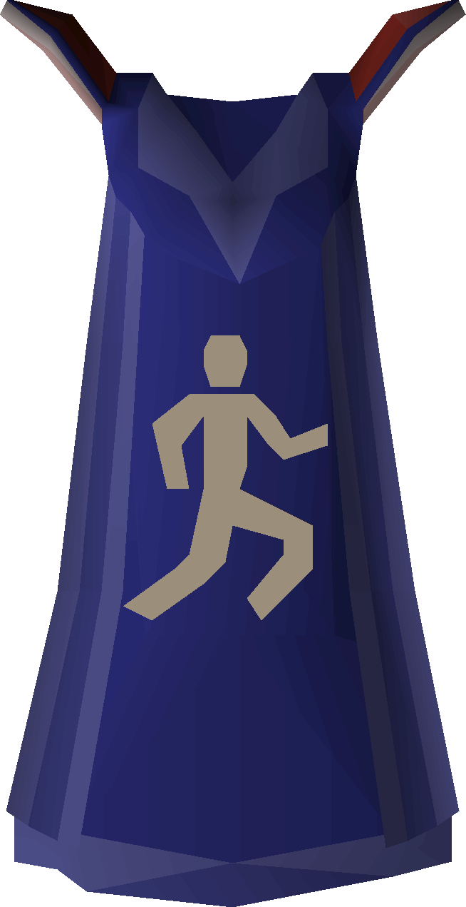 | With your body in peak physical condition, while wearing your cape your run energy drains 25% slower. |
| Herblore Cape | 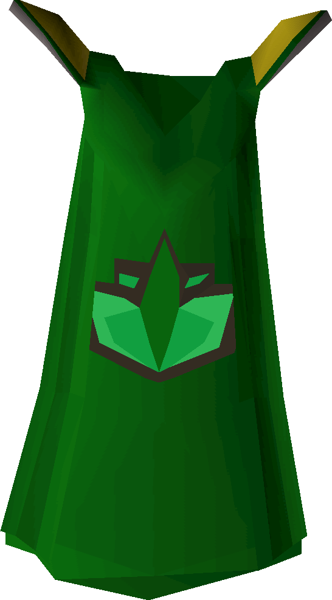 | When making potions, you have a 15% chance to make a 4-dose rather than a 3-dose due to your ability to make the most of your ingredients. |
| Crafting Cape | 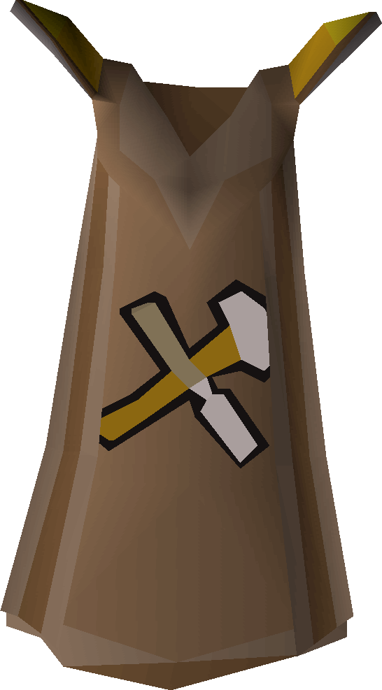 | Not Implemented yet. |
| Thieving Cape | 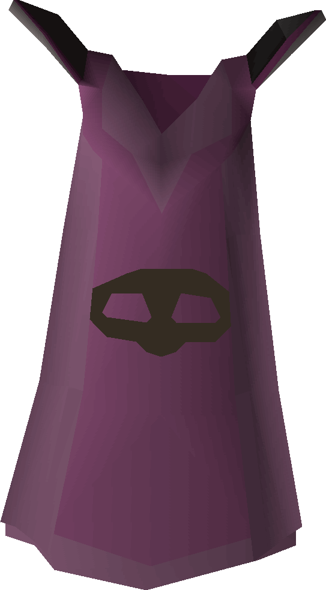 | Your expertise with pickpocketing makes you much harder to detect. 25% lower chance to fail a pickpocket. |
| Fletching Cape |  |
Not Implemented yet. |
| Hunter Cape | 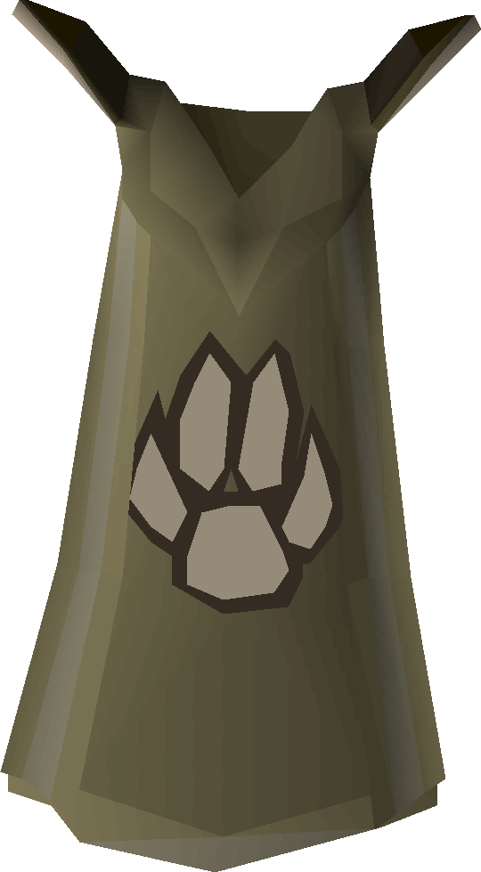 | Not Implemented yet. |
| Mining Cape |  |
Your mastery of mining has brought you a great familiarity with the grain of rocks. It becomes slightly faster to mine any ore. |
| Smithing Cape |  |
Due to your absolute mastery with working metal, smithing no longer requires a hammer. Unlimited uses. |
| Fishing Cape |  |
Your skill with the harpoon makes you really great at timing your throws. 5% chance to catch two fish at once when harpoon fishing. Does not award additional xp for the second fish. |
| Cooking Cape | 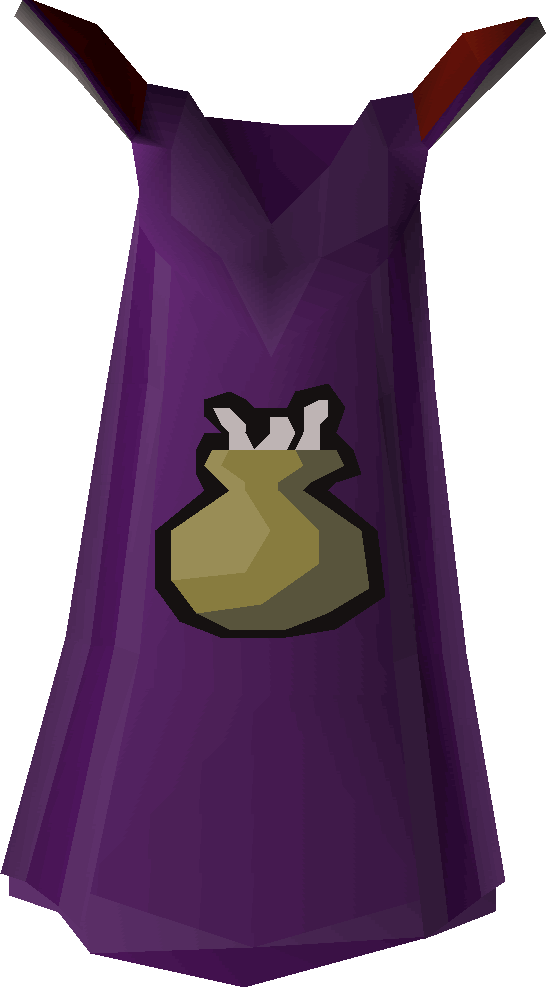 | Not Implemented yet. |
| Firemaking Cape |  |
The firemaking skillcape constantly emits a warm glow, making it function as a light source. |
| Woodcutting Cape | 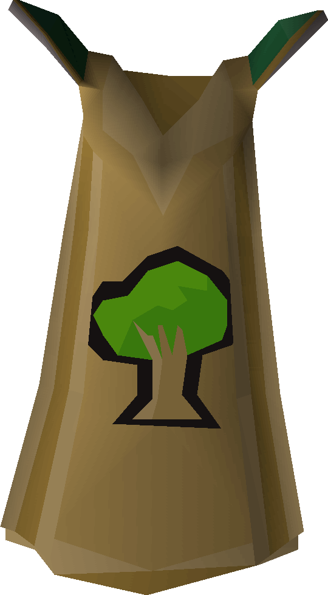 | You almost have a sixth sense when it comes to finding birds' nests. Nests are automatically collected into your inventory if you have space when dropped from a tree while woodcutting. |
| Farming Cape | 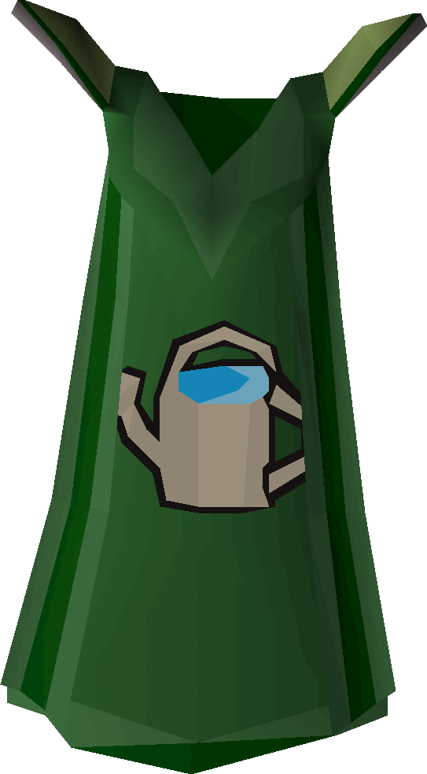 | Your farming cape seems to get a lot of seeds stuck to it. Operate once per day to claim 10 completely random seeds. |
Further Help
Need more help? Come chat with us!